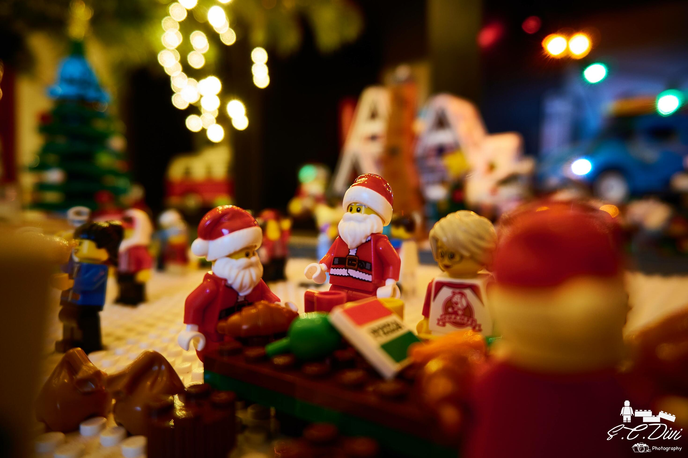
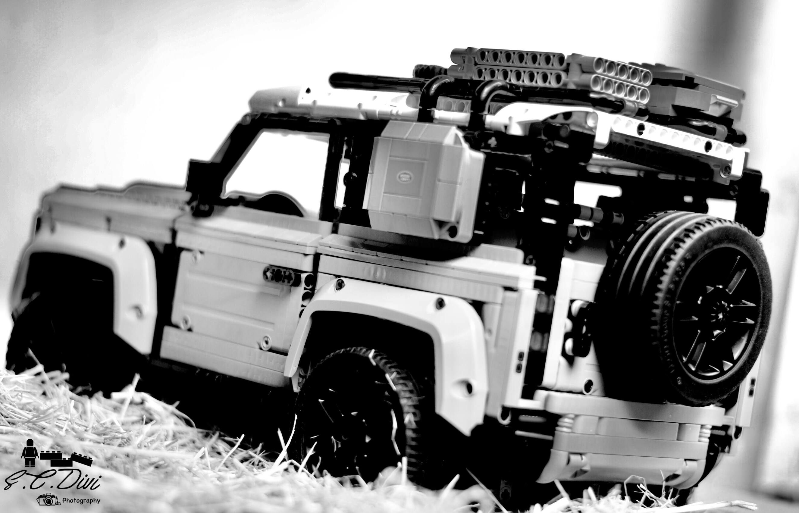

Lego / toy photography
Privacy please!
Shot on: Sony a6400. Settings: f/3.5, 1/800s, ISO 125.
Ellen & Sai on a vacation
Shot on: Sony a6400. Settings: f/4.5, 1/500s, ISO 125.
Ellen & Sai at La Chouffe beer brewery
Shot on: Sony a6400. Settings: f/3.5, 1/500s, ISO 100.
Ellen & Sai
Shot on: Sony a6400. Settings: f/3.5, 1/30s, ISO 100.
Forest explorer
Shot on: Sony a6400. Settings: f/3.5, 1/15s, ISO 100.
Santa nice list

Shot on: Sony a6400. Settings: f/3.5, 1/5s, ISO 200.
Honeydukes
Shot on: Sony a6400. Settings: f/3.5, 1/3s, ISO 200.
A morning head

Shot on: Sony a6400. Settings: f/4.5, 1/2s, ISO 200.
Legoland, Germany

Shot on: Sony a6400. Settings: f/5, 1/2000s, ISO 200.
Summer camping
Shot on: Sony a6400. Settings: f/3.5, 1/640s, ISO 100.
Family picnic
Shot on: Sony a6400. Settings: f/3.5, 1/640s, ISO 100.
Alert! Alert! We have a faller!
Shot on: Sony a6400. Settings: f/3.5, 1/15s, ISO 100.
Abba at eurovision 2021 Rotterdam
Shot on: Sony a6400. Settings: f/10, 1/125s, ISO 100.
WALL-E (Waste Allocation Load Lifter - Earth class) in tulips
Shot on: Sony a6400. Settings: f/3.5, 1/1000s, ISO 100.
Pooh hunting for hunny
Shot on: Nikon D3100. Settings: f/1.8, 1/125s, ISO 800.
Bike thief
Shot on: Sony a6400. Settings: f/3.5, 1/50s, ISO 200.
Skateboard at Rotterdam
Shot on: Sony a6400. Settings: f/5.6, 1/40s, ISO 200.
Helps in snow
Shot on: Sony a6400. Settings: f/6.3, 1/20s, ISO 200.
Fiat 500
Shot on: Nikon D3100. Settings: f/2.5, 1/4000s, ISO 100.
Christmas dinner
Shot on: Sony a6400. Settings: f/3.5, 1/10s, ISO 100
Lady bug strolling around a forest
Shot on: Sony a6400. Settings: f/3.5, 1/80s, ISO 100
Robin redbreast
Shot on: Nikon D3100. Settings: f/1.8, 1/60s, ISO 100.
Garderning
Shot on: Nikon D3100. Settings: f/1.8, 1/60s, ISO 100.
Wall-e
Shot on: Nikon D3100. Settings: f/1.8, 1/2500s, ISO 100.
Land Rover Defender
Shot on: Nikon D3100. Settings: f/1.8, 1/200s, ISO 100.
Lego house

Shot on: Nikon D3100. Settings: f/1.8, 1/250s, ISO 100.
Volkswagen Beetle
Shot on: Nikon D3100. Settings: f/2.5, 1/4000s, ISO 100.
The Flintstones
Shot on: Nikon D3100. Settings: f/1.8, 1/640s, ISO 100.
Roses & cosmos
Shot on: Nikon D3100. Settings: f/1.8, 1/60s, ISO 100.
Banana in banana
Shot on: Nikon D3100. Settings: f/1.8, 1/10s, ISO 100.
Treehouse
Shot on: Nikon D3100. Settings: f/1.8, 1/160s, ISO 800.
Roses
Shot on: Nikon D3100. Settings: f/1.8, 1/200s, ISO 800.
Tourist at Rotterdam
Shot on: Sony a6400. Settings: f/3.5, 1/2000s, ISO 200.
Harry Potter: Sorting hat ceremony
Shot on: Nikon D3100. Settings: f/1.8, 1/50s, ISO 100
WALL-E (Waste Allocation Load Lifter - Earth class) & Eva celebrating christmas
Shot on: Nikon D3100. Settings: f/1.8, 1/50s, ISO 800
Bike christmas decor
Shot on: Nikon D3100. Settings: f/1.8, 1/60s, ISO 800